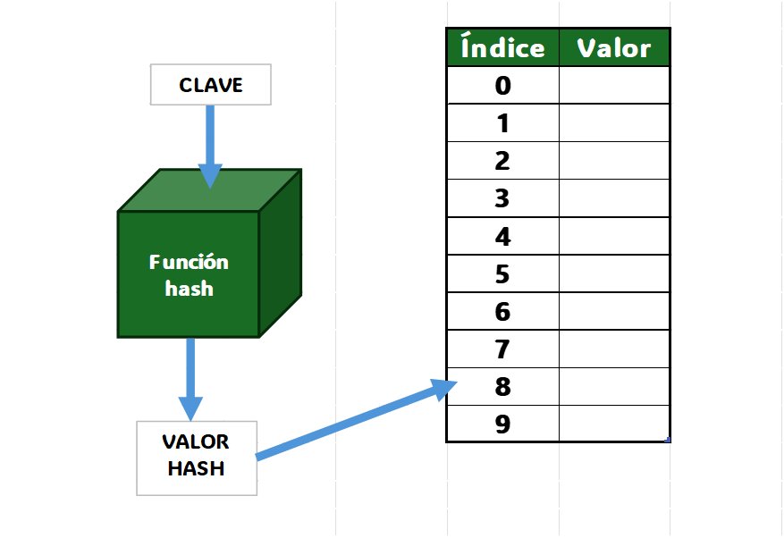
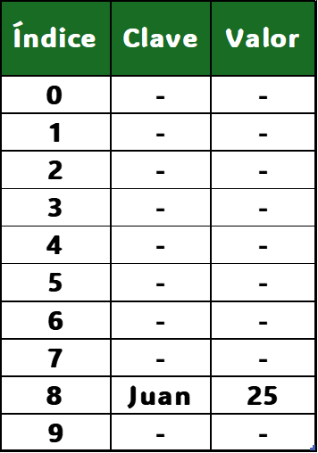
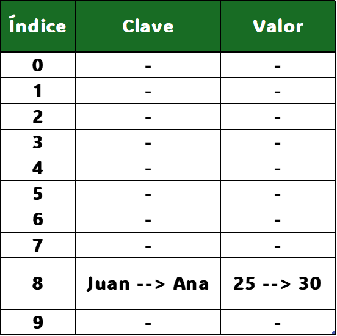
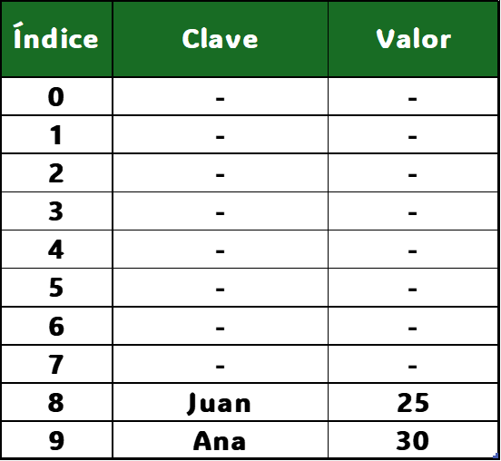

Una tabla hash es simplemente una estructura de datos que organiza los elementos en "celdas" usando una función matemática llamada función hash. Esta función convierte las claves (como "Juan") en números, que se usan como índices para colocar los valores en en un array o lista.

Funciona de la siguiente manera:
1. Se aplica una función hash a la clave
Ejemplo: si la clave es "Juan", la función hash genera un número (índice en el array a guardar el valor). Por ejemplo, 8.
2. Se almacena el valor en la posición del array indicada por la función hash
Si hash("Juan") = 8, entonces "Juan" → 25" se guarda en la posición 8 de la tabla.

3. Cuando queremos acceder a un valor, la función hash coge la clave ("Juan"), calcula el número de índice y encuentra rápidamente la casilla que corresponde
Cuando hacemos get("Juan"), la función hash obtiene el índice 8 y recupera el valor 25.
¿Y si con claves distintas se obtiene la misma posición?
Cuando dos claves diferentes producen el mismo índice, ocurre una colisión.
hash("Juan") = 8
hash("Ana") = 8 ambos datos quieren ocupar la misma posición en la tabla.
Una buena función hash debería generar posiciones aleatorias y uniformemente distribuidas en la tabla para minimizar las colisiones: cuando dos elementos diferentes generan la misma posición en la tabla. Si la función hash no es lo suficientemente buena, pueden producirse colisiones frecuentes y disminuir el rendimiento de la tabla hash.

Soluciones para las colisiones
Existen dos formas principales para manejar colisiones:
-
Encadenamiento (Chaining). Usa una lista en cada índice para almacenar múltiples valores con la misma clave. En Java, HashMap usa internamente listas enlazadas.
// representación conceptual
tablaHash[8] -> ["Juan" → 25] -> ["Ana" → 30]

Así, la búsqueda en caso de colisión, revisa la lista enlazada.
-
Dirección abierta (Open Addressing). En lugar de usar una lista, si una posición está ocupada, se busca la siguiente disponible en la tabla.
